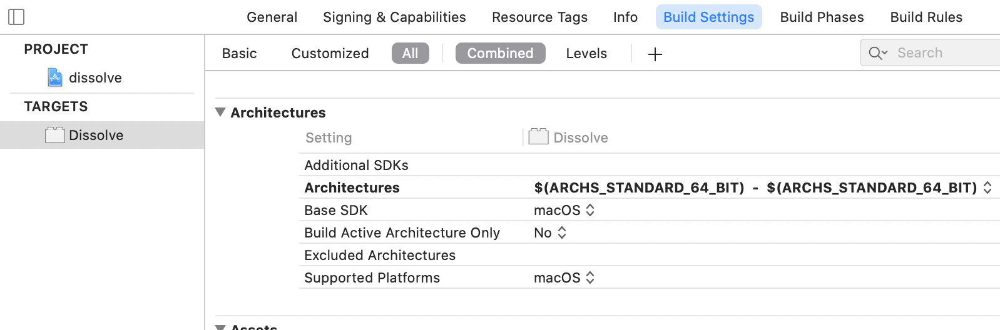
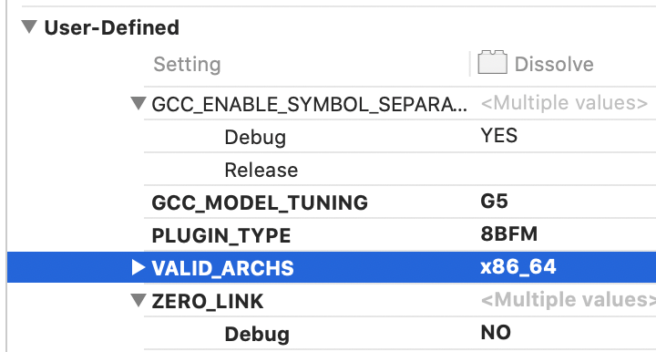
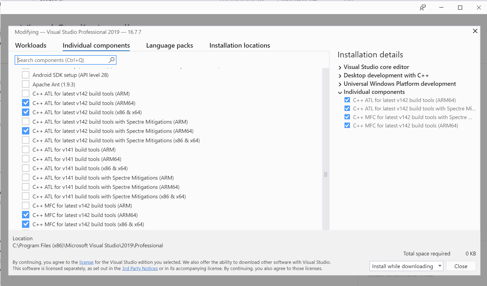
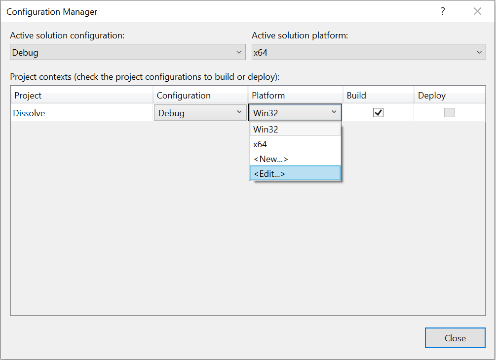
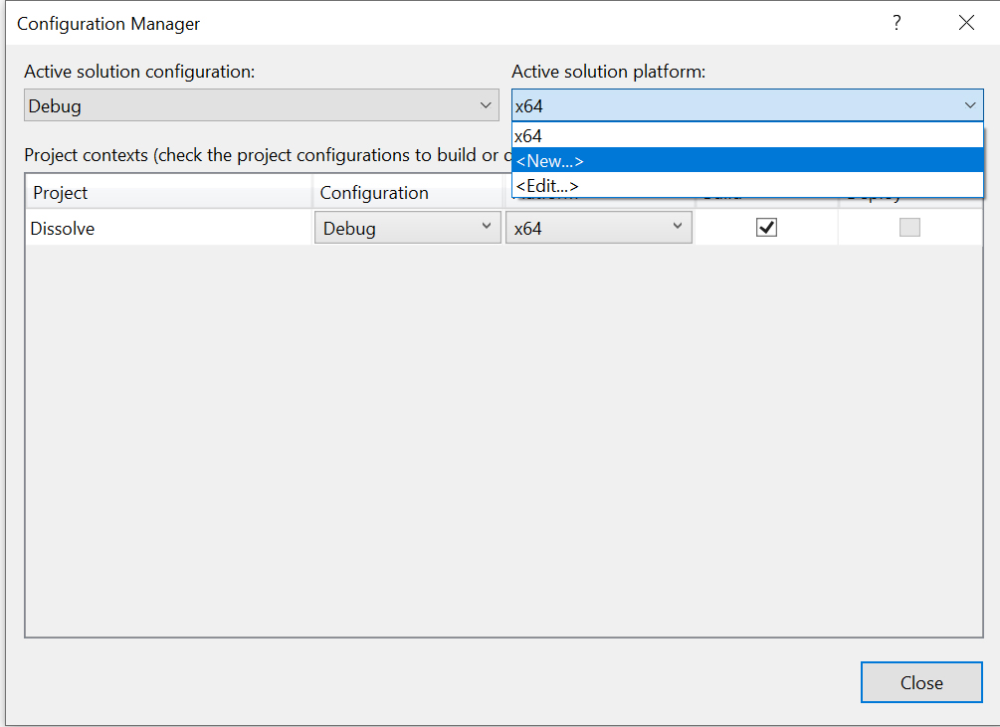
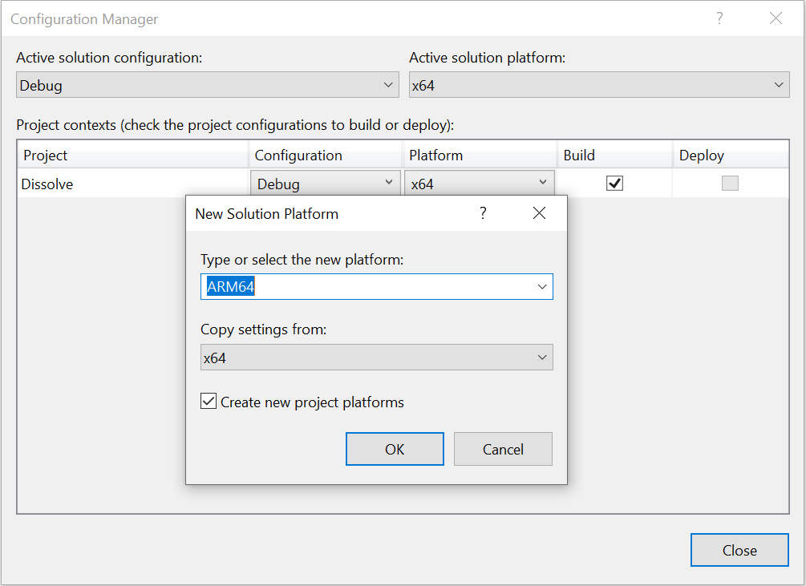

|
|
Adobe Photoshop SDK |
|
Project settings for Apple silicon and Windows ARMThis page describes the changes needed for your project in order to build a plugin for Apple silicon and Windows ARM.In order to test your plugin you will need to download a specific version of Photoshop. Adobe has released a public beta of Photoshop 2021 built specifically for ARM devices on each platform. Use the Adobe Creative Cloud desktop application to find and download that version. That version will download to a (BETA) folder and will not override the Photoshop 2021 release. The ARM version of Photoshop is only available for download on an ARM OS. Add ARM entrypoint to your PiPLChange your PiPL entrypoint property for two on Macintosh to support a Universal binary and to switch on windows depending on which platform you are building for. CodeEntryPointWin64 will get defined correctly on x64 and ARM64 via PIResourceDefines.h.
#include "PIResourceDefines.h" // in your PiPL definition change these to your entrypoints #if Macintosh #if defined(__arm64__) CodeMacARM64 { "PluginMain" }, #endif #if defined(__x86_64__) CodeMacIntel64 { "PluginMain" }, #endif #elif MSWindows CodeEntryPointWin64 { "PluginMain" }, #endif Xcode projects for Apple siliconThe OS requirement for Xcode 12 is OS 10.15. Xcode 12.2 can be downloaded from the App Store application.Information on changes to your project can be found here. The architecture setting will get automatically set for you when using the Xcode 12.2 or newer. Here is an image from one of the SDK examples.

Previously, all of the SDK example xcodeproj files contained a VALID_ARCHS directive in the User-defined section that was set for x86_64 binaries only. That define should be deleted from your project. You can find that setting if you scroll down to the bottom and find the User-defined section. Select that line and press delete to remove.

The SDK examples now build x86_64 and arm64 universal binaries. The lipo -archs command can be used to verify what OS your plugin is currently set to support. Visual Studio 2019 projects for Windows ARMVisual Studio does not automatically configure a target for ARM for you. The details on how to add an ARM64 target using Visual Studio 2019 are given in this section. At the time of this writing Visual Studio 2019 Version 16.7.7 was used.If the below directions are missing the ARM64 option then you will need to modify your install of Visual Studio 2019. The installer is available from Microsoft. Click the Modify option and make sure the ARM64 options for ATL and MFC are installed. Here is a screenshot of the options needed in the Individual Components tab.

Information on Windows 10 and ARM can be found here. Previously, all of the SDK example solutions had a Win32 project. Those have now been deleted. Right click on your project in Visual Studio and select properties. In the top right of the dialog click the "Configuration Manger..." In the middle of the dialog select the Platform dropdown and select the "<Edit..."> option. Select the Win32 target and press the Remove button and then press the Close button. This is not required to enable ARM64 but an easy edit to clean up your projects at this time.

Create a new ARM64 target by selecting the Active solution platform: dropdown and select "<New ...>" Select ARM64 in the Type or select the new platform dropdown and Copy settings from: x64. Press the OK button.


Now your Solutions platform menu item will have an ARM64 and x64 target. Make sure both of those build. The SDK examples are updated to use the build variables available for Visual Studio. The key variables used are Dissolve for example, for Debug or Release and for ARM64 or x64. This enables a cleaner project file. The SDK examples updated the following settings accordingly. General: Output Directory and Intermediate Directory, C/C++ Output Files, Linker: General and Import Library The SDK projects had a link error regarding LINK : fatal error LNK1246: '/DYNAMICBASE:NO' not compatible with 'ARM64' target machine; link without '/DYNAMICBASE:NO'. Changing that property for ARM64 is in the linker settings. |